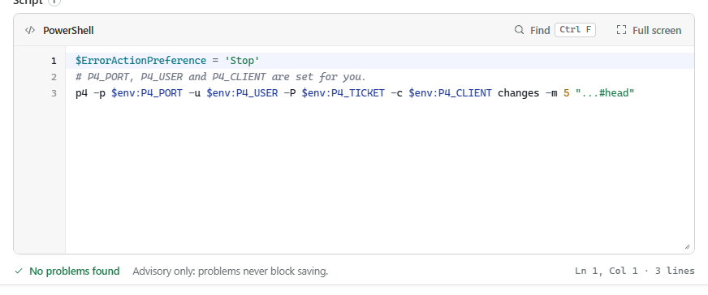

Use P4 commands in a script with the P4 ticket
Run the p4 program in a PowerShell or shell step, signed in with the ticket Buildspawn gives the build, with no password in the script.
Before you start
- A build configuration with a Perforce root or Perforce Software.
- The
p4program installed on the agent. - The setting Hide TICKET in the Perforce part of the system settings is off (the default). If it is on,
P4_TICKETis not given to steps.
For common jobs (sync, clean, submit, shelve) the Perforce operations step needs no p4 program and no ticket. Use a script only for something it cannot do.
Steps
- Open Settings › Build steps and add a PowerShell step. Name it
List my changes. - Type the script:
$ErrorActionPreference = 'Stop' # P4_PORT, P4_USER and P4_CLIENT are set for you. p4 -p $env:P4_PORT -u $env:P4_USER -P $env:P4_TICKET -c $env:P4_CLIENT changes -m 5 "...#head" - Click Save and Run.
-P gives the ticket as the password, -p the server, -u the user and -c the workspace. In a batch step use %P4_TICKET%.

Do not print the ticket. Do not write it to a file that stays after the build, and do not pass it on the command line of programs that log their arguments. A ticket in the output is hidden in the log only when Buildspawn knows it, so keep it out of echo lines.
Check it worked
The log shows the five changelists. If the ticket is wrong you see Your session has expired, please login again.
Change 48512 on 2026/11/26 by dana.k@skyforge-win64 'Fix door collision' Change 48508 on 2026/11/26 by t.osei@skyforge-art 'Update fog settings'
Troubleshooting
| You see | What to do |
|---|---|
P4_TICKET is empty | Check Hide TICKET. Check that the step runs after the checkout, which happens before the steps start, and that the connection can log in. |
| The term 'p4' is not recognized | Install the p4 command line on the agent and add it to the path. |
| Session expired | Use a ticket credential made with p4 login -ap, or a password credential, so Buildspawn logs in for each build. |